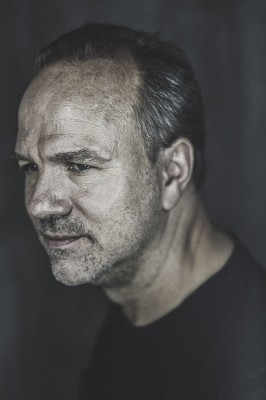

#6415 Switch - Ein mörderischer Tausch


 IMDB-Wertung: 6.3 / 10
IMDB-Wertung: 6.3 / 10  Metascore: 0
Metascore: 0 
Die beruflich momentan erfolglose Kanadierin Sophie wendet sich an switch.com, um ihre Wohnung in Montreal mit einer Pariser Wohnung zu tauschen. So hofft sie frischen Wind in ihr Privatleben zu bringen und auch beruflich wieder auf die Beine zu kommen. Paris begeistert sie und sie freut sich auf die erste Nacht in der fremden Wohnung. Morgens wacht sie mit Übelkeit auf, versucht, sich unter der Dusche wieder fit zu machen, als die Polizei die Wohnung stürmt... Ein superspannendes Katz- und Maus-Spiel beginnt...
Jahr: 2011
Dauer: 103 Minuten
FSK: 16
Land: Frankreich Studio: UFATonspuren: DTS - ,
Untertitel: Deutsch,
Auflösung: 1080p (1920x816) Größe: 9390 MB
Genre: Action, Thriller, Krimi
Regisseur: Frédéric Schoendoerffer
Drehbuch: Jean-Christophe Grangé
Soundtrack:
Darsteller:
 Karine Vanasse als Sophie Malaterre
Karine Vanasse als Sophie Malaterre Eric Cantona als Damien Forgeat
Eric Cantona als Damien Forgeat Mehdi Nebbou als Stéphane Defer
Mehdi Nebbou als Stéphane Defer-  Aurélien Recoing als Delors
- Karina Testa als Bénédicte Serteaux
- Bruno Todeschini als Verdier
- Maxim Roy als Claire Maras
- Sophie Faucher als Marianne Malaterre
 Karim Saleh als Kourosh
Karim Saleh als Kourosh- Stéphane Demers als Inspecteur Lachaux
- Lika Minamoto als Japonaise
- Françoise Michaud als Agathe Huygens
- Vince Benvenuto als Chauffeurs de taxi
- Samuel Platel als Livreur UPS
- Niseema Theillaud als Alice Serteaux
- Stéphan Guérin-Tillié als 3ème de groupe
- Sarah Pebereau als 4ème de groupe
- Cyril Lecomte als Koskas
- Ludovic Schoendoerffer als Le légiste
- Maurice Bitsch als Le dentiste
- Pierre Leblanc als Inspecteur canadien
- Claude Lulé als Père Huygens
- Laëtitia Lacroix als La psy
- Jacob Desvarieux als Pat
- Khalid Maadour als Réceptionniste
- Sébastien Houbani als Le zonard
- Mathilde Snodgrass als Journaliste TV
- Yves Fortin als Chauffeurs de taxi
- Achille Ndari als Homme dans le metro
- Monia Moula als Doublures Sophie
- Virginie Arnaud als Doublures Sophie
- Lyne Doffagne als Doublures Sophie
- Ludo Silemetzoglou als Doublure Forgeat
- Eric Mondoloni als Doublure Kourosh
Datei: X:\2011(N-Z)\Switch - Ein mörderischer Tausch (2011, FSK16, 1920x816).mkv seit 20.06.2017
Festplatte: HD 2011(G-Z)
 Es gibt insgesamt 132 Filme in der Gruppe '2011(N-Z)'
Es gibt insgesamt 132 Filme in der Gruppe '2011(N-Z)'